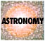
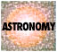

| |
Planetary nebula luminosity
functions
The CASt dataset
plan_neb.dat
Astronomical background
The nomenclature "planetary nebula" is historical and is
misleading: it has nothing to do with planets. Rather, planetary
nebulae (PNe) were discovered by 19th century astronomers as luminous
structures, often circular or ring-shaped, in the sky with a very hot
central star. In the 20th century, they were understood as a
phase in the evolution of intermediate-mass stars like our Sun: after
the main sequence star depletes hydrogen in its core over billions of
years, it becomes a red giant star with complicated stages of
hydrogen/helium/carbon fusion. When these stages terminate, the
outer layers of the star are ejected into a PN, revealing the hot core
which cools to become a white dwarf star. PNe are thus studied in
detail to understand the death of stars.
The PN phase is very short-lived, so that only ~102 of the
~1011 stars in a major galaxy exhibit PNe at a given moment. For
complex reasons, the collective distribution of PN luminosities appears
to be a universal property of galaxies. This distribution is
called the planetary nebula luminosity function (PNLF) and is one of
the principal tools used to estimate distances to nearby
galaxies. Distances are directly related to the offset It is thus
a step in the "cosmic distance ladder" which determines the scale,
expansion and age of the Universe.
Dataset
We give here simple univariate datasets of PN
brightnesses in magnitudes for five nearby galaxies. The
magnitudes are measured in [O III]5007, a "forbidden" emission line of
twice-ionized oxygen. Messier 31 = Andromeda Galaxy (238 PNe),
the closest large galaxy and distance scale calibrator); Messier 81 (89
objects), a
large spiral just outside our Local Group of galaxies; NGC 3379
(45 objects),
a nearby elliptical galaxy; NGC 4494 (101 objects) and NGC 4382
(59 objcts) in the Virgo
Cluster, the nearest rich cluster of galaxies. Magnitudes are an
inverted logrithmic unit of brightness. Due to observational
limitations at the telescope, only the brighter PNe in a given galaxy
can be detected. Each observation has a "completeness" limit
which truncates the PNLF (which must be estimated), and usually
includes some PNe which are fainter than this limit.
Original references for these datasets and PNLF studies are:
M31 (bulge): Ciardullo et al. 1989, Ap.J.,
339, 53 +
Ciardullo et
al. 2002, Ap.J., 577, 31
M81 (bulge): Jacoby et al. 1989, Ap.J., 344,
704
NGC 3379: Ciardullo, Jacoby,
& Ford 1989, Ap.J. 344, 715
NGC 4494: Jacoby, Ciardullo,
& Harris 1996, Ap.J., 462, 1
NGC 4382: Jacoby,
Ciardullo, & Ford 1990, Ap.J., 356, 332
The first figure below (from Ciardullo et al. 1989)
shows the PNLF of M 31 using the complete (untruncated) sample.
The data have been grouped into 0.2 mag wide bins. The segmented
line is an independently derived model (not based on the data) from an
astrophysical calculation of PN evolution.
The figure below (from Ciardullo et al. 2002) shows several examples of
PNLFs (in grouped magnitudes), the "universal" PNLF shape, and the
offsets between galaxies due to different distances. Only the
filled circles lie above the magnitude truncation limit and only these
are used to estimate galaxy distances.
Statistical exercises
- Using nonparametric and parametric techniques, test the
hypothesis that the the individual PNLFs are drawn from a single
universal distribution. That is, the PNLFs have the same shape
though different magnitude offsets and truncations. In
particular, is the PNLF of the elliptical galaxy at low metallicity
consistent with the PNLF of the higher-metallicity spiral
galaxies? Use only the PNe brighter than (i.e. smaller magnitude
values) than the truncation limit.
- Using semi-parametric and parametric techniques, estimate
the magnitude offset between M 31 and the other galaxies.
Estimate the confidence intervals of each offset. Compare results
to published distances to these galaxies.
- Determine a parametric form for the PNLF with best-fit
parameters and confidence intervals. Use this to quantitatively
estimate the magnitude truncation limit for each galaxy.
- Using semi-parametric or parametric techniques, estimate
the offsets between the galaxy PNLFs in number (rather than magnitude),
which gives insight into the total stellar populations of the galaxies.
These datasets were kindly prepared by
Prof. Robin Ciardullo, Penn State University
|


 
